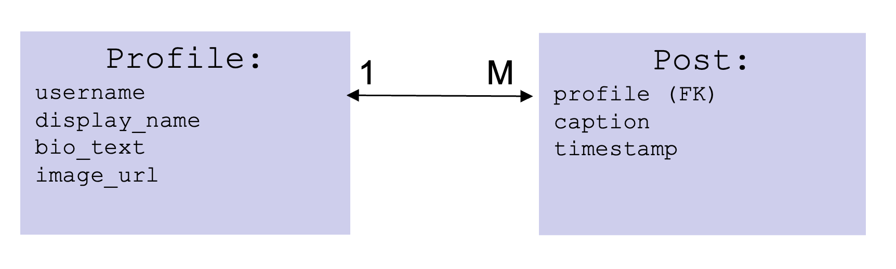
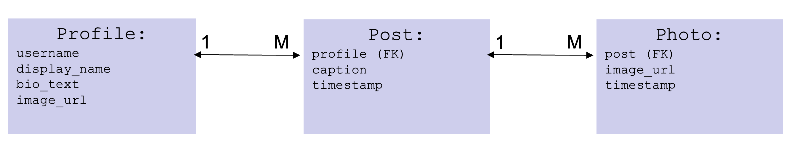
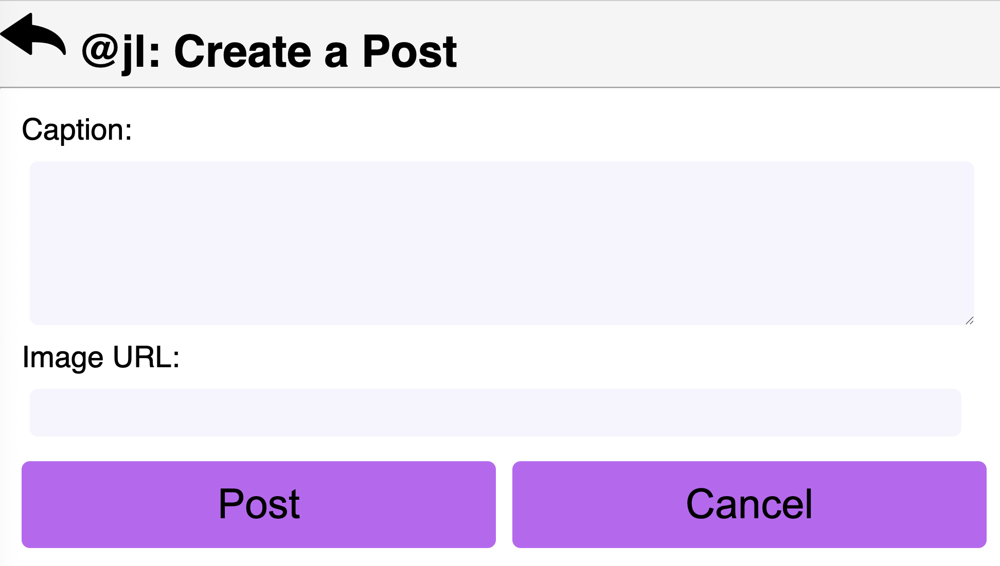

Assignment 4: Using Multiple Models; Creating Model Data
due by 9:00 p.m. EDT on Friday 10/3/2025
Learning Objectives
After completing this assignment, students will be able to:
-
Use generic
ListViewandDetailViewto display records from the database. -
Implement a 1-to-many relationship among data models.
-
Create custom templates to display model data, including 1-to-many relationship data.
-
Handle HTTP GET and POST requests for HTML form display and submission.
-
Use HTML forms to create model data records.
-
Write HTML templates to display HTML forms.
-
Create appropriate URL patterns to perform CRUD actions on specific object instances, and to provide object information to views.
-
Inherit from the Django generic
CreateView, to process form data submissions. -
Customize the generic
CreateViewclass to set foreign-keys when creating 1-to-many relationships.
Pre-requisites: Assignments 3
Assignment 4 builds upon the case study you began in Assignment 3.
You must have completed Assignment 3 before you begin Assignment 4.
Case Study: Mini Insta
This assignment is part of an in-depth case study to develop a data-enabled web application. In the entire case-study, you will simulate the core features of the Instagram social networking application. Over the course of 5 parts, you will implement:
- Viewing, creating, and updating user profiles
- Viewing and creating posts
- Uploading images
- Viewing and adding followers
- Developing a feed to show posts from Profiles one is following
- Incorporating user accounts, authentication (login), and registration
This assignment is the second part of the case study.
Here is a sample implementation: MiniInsta part 2.
You do not need to match the data of this example, or even the way it is formatted. The look and feel of the application, as well as the data you dispaly, is entirely up to you.
Preliminaries
In your work on this assignment, make sure to abide by the collaboration policies of the course.
If you have questions while working on this assignment, please post them on Piazza! This is the best way to get a quick response from your classmates and the course staff.
For each problem in this problem set, we will be writing or evaluating some Python code. You are encouraged to use the VS Code IDE which will be discuss/presented in class, but you are welcome to use another IDE if you choose.
Important Guidelines: Comments and Docstrings
-
Refer to the class Coding Standards for important style guidelines. The grader will be awarding/deducting points for writing code that comforms to these standards.
-
Every program file must begin with a descriptive header comment that includes your name, username/BU email, and a brief description of the work contained in the file.
-
Every function/method must include a descriptive docstring that explains what the function does and identifies/defines each of the parameters to the function.
Continue working on the mini_insta Application
Continue to do this work within your existing Django project, within the mini_insta.
application that you worked on in Assignment 3.
Task 1: Modeling and Displaying Posts and Photos
-
Create a new model called
Post, which will model the data attributes of an Instagram post. ThisPostmodel will need to include the following data attributes:profile(the foreign key to indicate the relationship to theProfileof the creator of this post)timestamp(the time at which this post was created/saved)caption(the optional text associated with this post)
Here is a diagram of the models and their relationships:

The foreign key is how we model a relationship between different kinds of objects. In this case, we are defining the relationship such that every
Postobject is related to a singleProfileobject.Be sure to create a
__str__method on this class to return a string representation of this object. -
Create a new model called
Photo, which will model the data attributes of an image associated with aPost. ThisPhotomodel will need to include the following data attributes:post(the foreign key to indicate the relationship to thePostto which thisPhotois associated.image_url(a valid URL to an image stored on the public world-wide web)timestamp(the time at which thisPhotowas created/saved)
Here is a diagram of the models and their relationships:

The foreign key is how we model a relationship between different kinds of objects. In this case, we are defining the relationship such that every
Photoobject is related to a singlePostobject.Be sure to create a
__str__method on this class to return a string representation of this object. -
Use the Django admin to create some sample data:
-
Create 3 sample
Posts, for at least 2 differentProfiles, with any content/captions of your choosing. -
Create at least 3 sample
Photos, associated with 2 differentPosts. That is: at least onePostshould have more than onePhoto.
-
-
Create accessor methods to retrieve related model data.
-
In the
Profileclass, define an accessor methodget_all_poststo find and return allPosts for a givenProfile. The return type will be aQuerySetcontainingPosts. -
In the
Postclass, define an accessor methodget_all_photosto find and return allPhotos for a givenPost.
The return type will be aQuerySetcontainingPhotos.
Hint: Use the object manager to filter
Postobjects by theirprofile(foreign key), and order them by timestamp. -
-
Edit your
show_profile.htmltemplate to add the display ofPosts.For each
Post, you should display the firstPhotoassociated with thatPost. If there is noPhotoassociated with thePost, display an alternate image indicating that there is “no image.” -
Create a view, template, and URL pattern to display a single
Post.The view should be called
PostDetailView, and the template should be calledshow_post.html. The URL pattern should be in the form:'http://127.0.0.1:8000/mini_insta/post/<int:pk>', where<int:pk>will be replaced by the primary key for thePostbeing shown.On the page to show the post, display the post caption and timestamp, as well as all
Photos associated with thisPost. You may choose how to arrange these on the page, for example using atableordivelements within a grid layout.Finally, on the
show_profile_page.htmltemplate, add a link from eachPostto retrieve it’s detail page. -
Test your page! Try this URL pattern:
'http://127.0.0.1:8000/mini_insta/. Follow the link to any profile that has posts, and view that page.
Important: Add files to git!
-
You’ve just reached a good stopping point.
-
This is an excellent time to add your files to git, commit your changes, and push your changes to GitHub before anything gets F@&#ed up.
Task 2: Creating a new Post
In this Task, you will create a form to collect inputs to create a new Post.
For example:

-
Within the
mini_instaapplication folder, create the new fileforms.py. In this file, add the following import statements at the top:from django import forms from .models import *
Create a class
CreatePostFormwhich inherits fromforms.ModelForm. Be sure to specify the inner-classMeta, which relates this form to thePostmodel.Also, specify the list of
fieldsthat this form should set (i.e., the data attributes of thePostclass).
Note: How Django displays HTML Form Fields
-
By default, Django will choose which type of HTML form fields to use, based on the data types of the fields in your model.
For example, when your form has a
model.TextField, Django will use a<textarea>(multi-line text input box). Often, this is OK. For this assignment it is fine, and you can get full functionality and points using the defaults. -
If you want to customize how the HTML form displays, you can explicitly tell Django which type of form field to use.
-
See the details in the Django Forms Documentation page.
-
Create the template file
mini_insta/create_post_form.html, to render the HTML form. Your form must:- define the
<form>tags, and set the form’s method toPOST - include the django-created
csrf_tokenas a form field (as you did in the example video) - provide a submit button and a cancel button
- do not include the
Profileas one of the fields in this form. It looks awkward on the screen, and anyway theprofilewill be specified by the URL which will process the creation of thePost.
You may use your discretion/imagination about how this template should display the form fields, but you must include labels for each field to show what input is expected. Upon submission, your form will be handled by the generic
CreateViewclass, which will create a new record for this model and store it in the database.Important design notes:
Recall that
Photos are stored separately fromPosts, which is required to enable the “one post can have many photos” relationship. As a consequence, we will need a way to include the important information for aPhoto(i.e., itsimage_urlattribute), which is not part of thePostobject. To do this, add an explicit HTML form field for theimage_urlto the form. We will return to this in a future assignment to enable (a) uploading images instead of specifying the URL and (b) handling multiple images instead of just one. For now, we will use animage_urland assume creating one singlePhotoperPost. - define the
-
Edit the file
views.pyto add a view calledCreatePostViewto handle the form submission. We will again use the genericCreateViewas a base class, but it will require some additional work that was not required in the pre-class example.Specifically, the
Postrequires a foreign key to relate it to aProfileobject, and aPhotorequires a foreign key to relate it to aPostobject. We will return to these below. For now, set up thetemplate_nameandform_class.Create a URL mapping to route requests from the URL pattern
'profile/<int:pk>/create_post', associate it with theCreatePostView, and name this URLcreate_post.Note: there are several ways to go about solving the issue of attaching the foreign key to the Post object. These instructions walk you through one approach using the generic CreateView.
First Complication: Implementing
get_context_datamethodTry this URL:
http://127.0.0.1:8000/mini_insta/profile/1/create_post. (Use another primary key if you have no object numbered 1).You should be able to display the
create_post_form.htmltemplate. When you try submitting it, it gets complicated.When you try to create the submission URL (the form
action), you will need to provide the parameterprofile.pk(i.e., identifying theProfileto which thisPostcorresponds) as part of that URL.To have access to this as a context variable, you will need to implement the special method
get_context_dataon theCreatePostViewclass.There is a special attribute called
self.kwargs, which is accessible within the methods on theCreateViewand its subclasses.self.kwargsis a dictionary containing any URL parameters, and the valueself.kwargs['pk']is the primary key of theProfilecorresponding to the URL pattern.In the
get_context_datamethod: begin with the context dictionary from the superclass. Find theProfileobject (corresponding toself.pk), add theProfileobject (call the context variableprofile, for consistency with how things worked on other pages). Now you will have access to the context variableprofilewithin thecreate_post_form.htmltemplate. Use theprofile.pkto help generate the URL to which the form should be submitted, e.g., the form action'http://127.0.0.1:8000/mini_insta/profile/1/create_post'.Second complication: Implementing the
form_validmethodTest out this URL again. You should now be able to display/submit the
create_post_form.html.create_post_form.htmltemplate. When you try to submit the form, you should see an error thatNOT NULL constraint failed: mini_insta_post.profile_id. Basically, you cannot create/save aPostwithout setting theprofileattribute.To solve this problem, you will need to write some custom code within the
CreatePostViewclass, to attach theProfileto thePostbefore submission. Implement the methodform_validon theCreatePostViewclass to: (a) look up theProfileobject by itspk. You can find thispkinself.kwargs['pk']. (b) attach this object to theprofileattribute of the post. Now you will be able to save thePostsuccessfully.Also in the
form_validmethod: use the data from therequest.POSTobject to create a newPhotofor thispost, and set thepostattribute as a foreign key (on thePhoto).After successfully creating a
Post, Django should automagically redirect you to the page to show that post (i.e., theDetailViewassociated with classPost. )Finally: be sure to include a “cancel” or “back” button to be able to navigate from the “create post” page back to the “profile” page.
-
Edit the
base.htmltemplate, and add a link to the bottom-of-screen navigation, to bring up thecreate_postpage (in its own page view).Note: to be able to create a
Post, we need to know theprofilefor whom thePostshould be created. This is only possible if theprofileis part of the context data for the page. Use decision-logic to show/not show this navigation button as appropriate (i.e., only when you have aprofilein the context data.) -
Testing!! Start at your main
/mini_instaURL, and pick any existing profile. You should see the profile page, with a form to post a post. Write something witty in the form, and use the submit button to submit it to the server.
Important: Add files to git!
-
You’ve just reached a good stopping point.
-
This is an excellent time to add your files to git, commit your changes, and push your changes to GitHub before anything gets F@&#ed up.
Deployment to cs-webapps
- Deploy your web application to the
cs-webapps.bu.edu.
Follow the deployment instructions here.
-
Test your web application on
cs-webapps.bu.eduto ensure that everything works correctly. -
Resolve any deployment issues.
Submitting Your Work
10 points; will be assigned by the autograder, verifying that you have submitted the correct files/URL, and testing that you website exists at the specified URL. 90 points; will be testing your application and code review
Log in to GradeScope to submit your work.
Be sure to name your files correctly!
-
Create a text file within your main django directory called
mini_insta_url.txt, containing the URL to your web page, and nothing else.For example:
https://cs-webapps.bu.edu/azs/cs412/mini_insta/.This file will be used by the autograder to locate your web page, so you must get the URL exactly correct, and you must not include any other text or code in the file.
-
Add the teaching staff as collaborators to your GitHub repository with
bu-cs412. Read-only access is fine.Create a text file called
github_url.txtin the root of your project (e.g.,djangodirectory). Paste your GitHub URL in the file.Add these files to your git repository using
`git add -A`.
Commit this to your git repository, using
`git commit -m "Added mini_insta_url.txt"`
Push it to GitHub, using
`git push origin main`
-
Log in to GradeScope to submit your work.
In the Gradescope upload page, upload these two files:
-
mini_insta_url.txt -
github_url.txt
-
Notes:
-
Upload these files to Gradescope before the deadline.
-
When you upload, the autograder script will process your file(s).
-
You may resubmit as many times as you like before the deadline, and only the grade from the last submission will be counted.